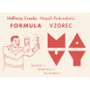
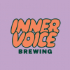

A Few Small Beers
Matt's 50th Birthday Beer Tasting · February 28, 2026
-
 VarySuper boiled for more malt expression. Honey, shortbread, noble hops.
VarySuper boiled for more malt expression. Honey, shortbread, noble hops. -

MavySoft chocolate, slightly floral, plush body. A pilsner in a tuxedo.
-
 MemoryFoeder-aged saison re-fermented on peaches. Farmhouse funk meets stone fruit.
MemoryFoeder-aged saison re-fermented on peaches. Farmhouse funk meets stone fruit. -

CowpokeMosaic, Simcoe, and Citra Cryo hops. Clear, piney, dry, firm bitterness.
-
 Mango Lassi SunsetMega fruited with mango puree and fresh coconut. Tropical, tart, creamy.
Mango Lassi SunsetMega fruited with mango puree and fresh coconut. Tropical, tart, creamy. -
 Perennial AbraxasThe birthday closer. Ancho chili, cacao nibs, vanilla, cinnamon.
Perennial AbraxasThe birthday closer. Ancho chili, cacao nibs, vanilla, cinnamon.
Find these beers on Untappd
Cheers to 50, Matt!